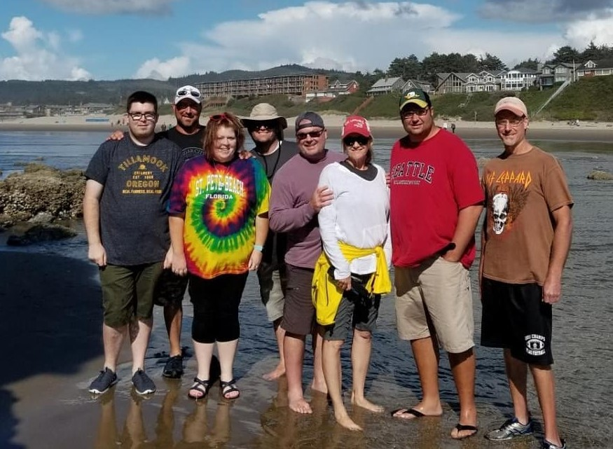

Camping
My family loves camping. We have a 38 ft pull trailer. It can sleep 10 people comfortably. before this camper we had a 20ish ft pull trailer which was not big enough for our family.
Where I Camp
My family has camped at many places. One of our go to spots is in Homedale, ID. We love to camp at state parks. We have camped at Three Island Crossing State park many times and it is our favorite weekend camping spot. Bruneau Dunes State Parks is also a great location but only during the cooler months since it is desert climate and gets very hot.
Favorite Trip
Our favorite trip to date is when we went to the Northern Oregon Coast. We left on a saturday and stayed halfway at a State Park in Oregon. On sunday, we made it to the Oregon Coast where we stayed at Nehalem Bay State Park. We stayed here for 6 nights. We drove halfway home and stayed at Memaloose State Park. We got home the following sunday. This was a 9 day trip which was fantastic. It was such an adventure. Next year, 2021, we have planned a Southern Oregon Coast Trip.
